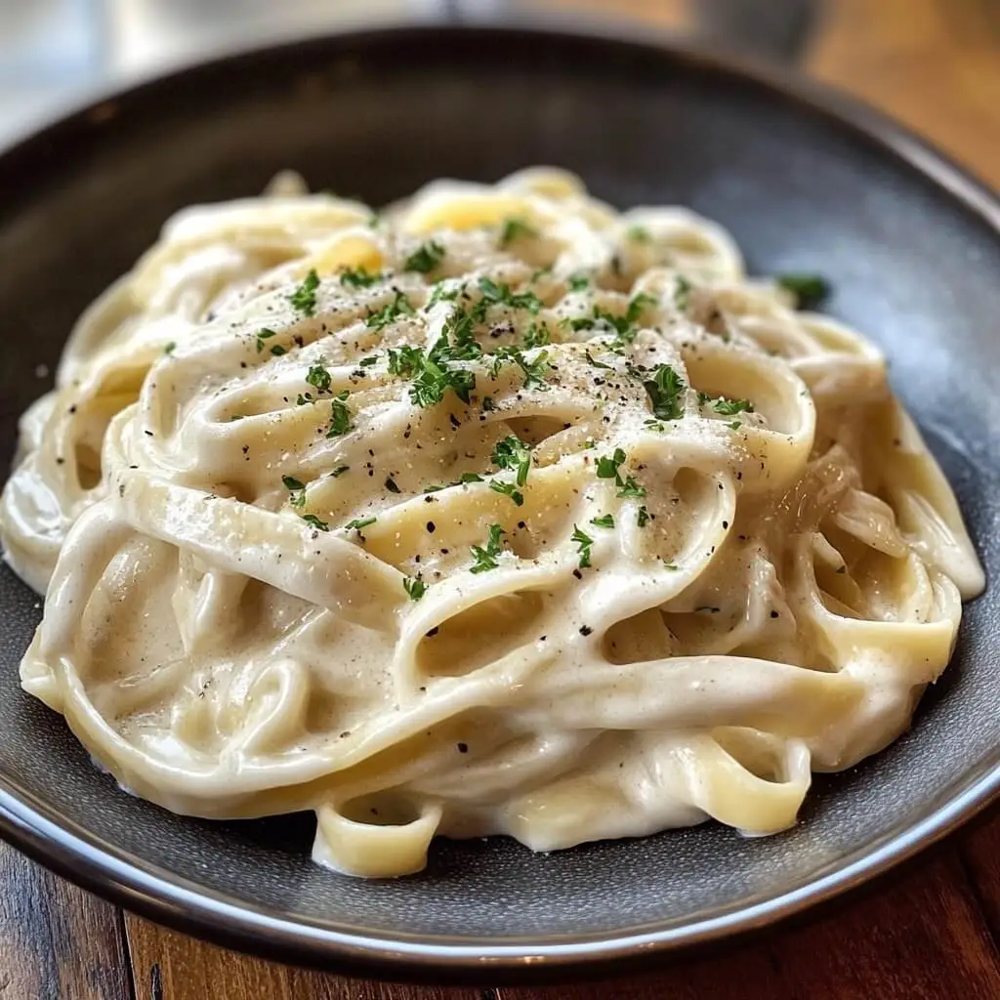

Pasta Alfredo

Pasta Alfredo skapades på 1910-talet av den italienska kocken Alfredo di Lelio i Rom. Han gjorde rätten som en enkel och lättsmält måltid för sin gravida fru, bestående av fettuccine, smör och parmesanost.
Rätten blev internationellt känd efter att Hollywood-stjärnorna Mary Pickford och Douglas Fairbanks besökte Rom 1927 och blev förtjusta i den. De hjälpte till att sprida rätten till USA, där den senare fick en gräddigare variant, vilket inte var en del av den ursprungliga italienska versionen.
4 Portioner 15 Minuter